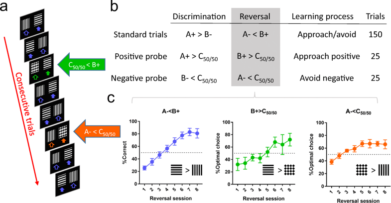

This webpage presents data and analyses of Alsiö et al. 2019 in Psychopharmacology “Dopamine D2-like receptor stimulation blocks negative feedback in visual and spatial reversal learning in the rat: behavioural and computational evidence” PubMed Elsevier
We tested a number of hypotheses
The work in this manuscript is based on the following, novel touchscreen task to study negative and positive feedback in reversal learning:

The top countries in Europe in 2007 wrt life expectency
#create data set that will be used to create an image
euro_data_fig <- pop_data %>%
filter(continent=="Europe") %>%
mutate(year=as.factor(year))euro_data_fig %>%
ggplot(mapping=aes(x=year, y=lifeExp)) +
geom_violin()life expectancy in Europe
https://github.com/sblab-bioinformatics?tab=repositories
https://github.com/hadleyBoulougouris V, Castane A, Robbins TW (2009) Dopamine D2/D3 receptor agonist quinpirole impairs spatial reversal learning in rats: investigation of D3 receptor involvement in persistent behavior. Psychopharmacology 202:611–620 PubMed
Cools R, Lewis SJ, Clark L, Barker RA, Robbins TW (2007) L-DOPA disrupts activity in the nucleus accumbens during reversal learning in Parkinson’s disease. Neuropsychopharmacology 32:180–189 PubMed
Frank MJ, Seeberger LC, O’Reilly RC (2004) By carrot or by stick: cognitive reinforcement learning in parkinsonism. Science 306:1940–1943 PubMed
Klanker M, Sandberg T, Joosten R, Willuhn I, Feenstra M, Denys D (2015) Phasic dopamine release induced by positive feedback predicts individual differences in reversal learning. Neurobiol Learn Mem 125:135–145 PubMed
For more information about simple R Markdown websites, please read the documentation at https://bookdown.org/yihui/rmarkdown/rmarkdown-site.html.
Please also note that simple R Markdown sites are not based on blogdown. They are probably good for websites with only a few Rmd documents. For larger-scale and more sophisticated websites (such as blogs), you may want to use blogdown instead: https://github.com/rstudio/blogdown.